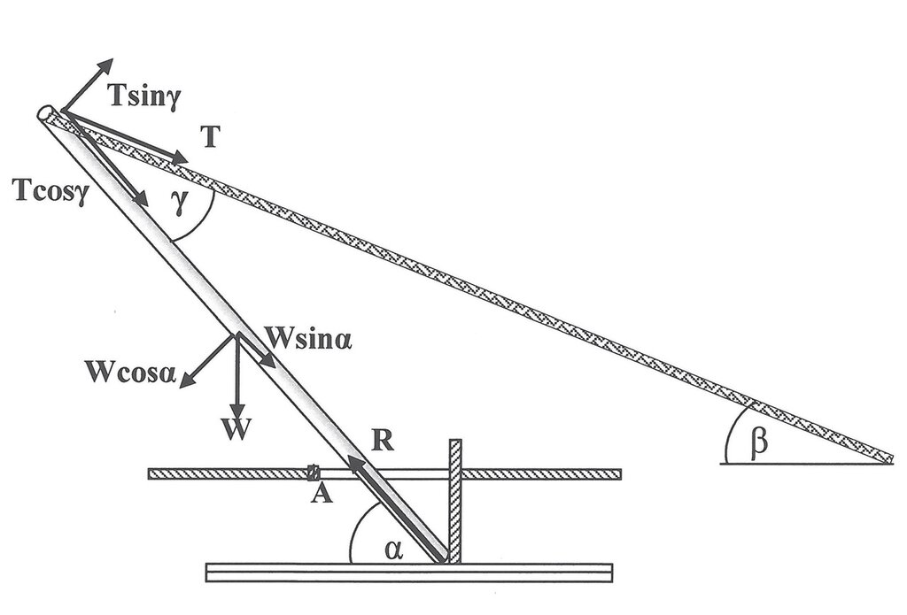
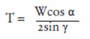
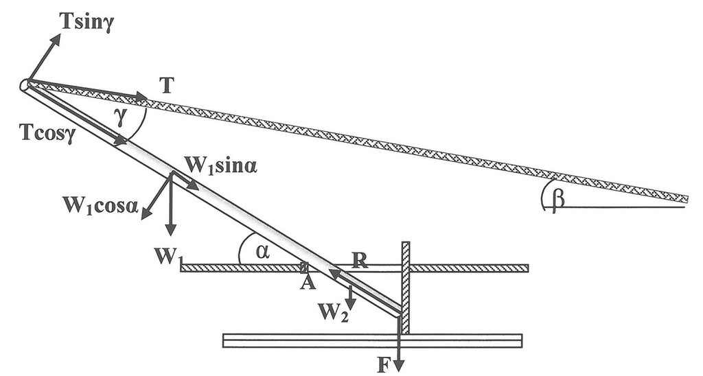
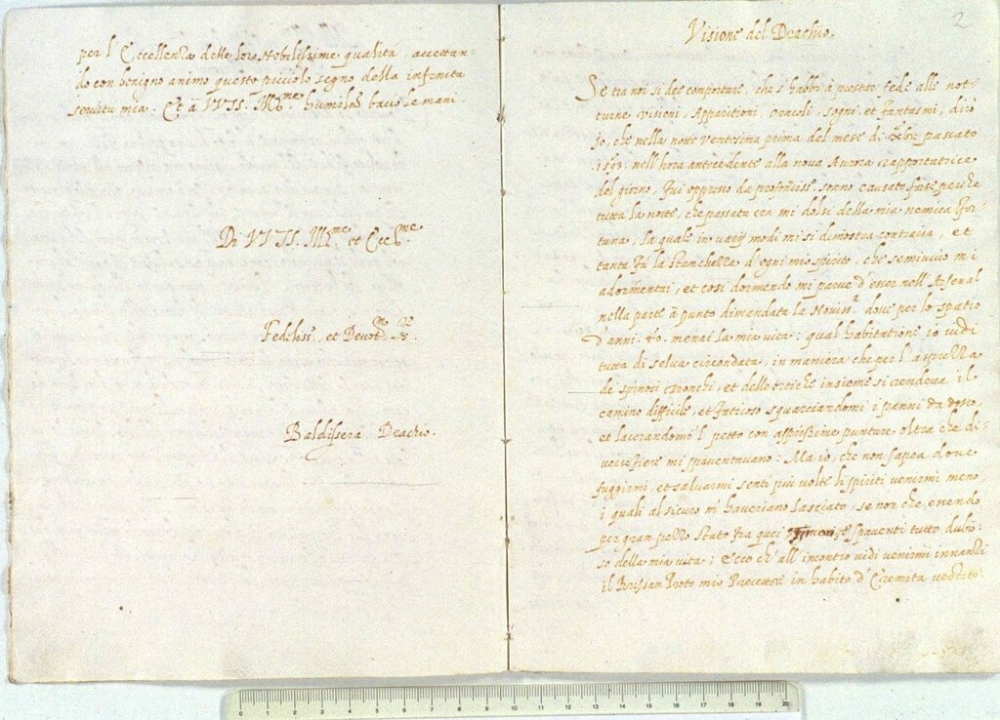
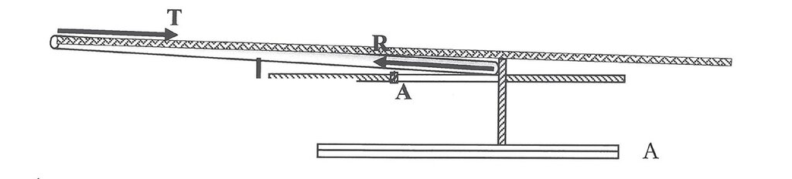
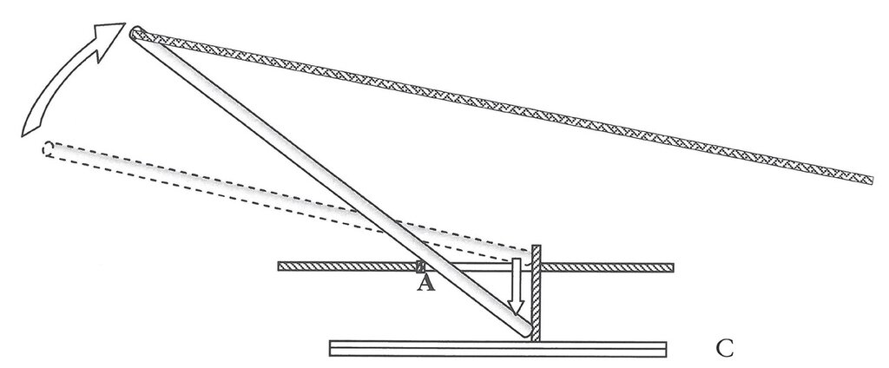

Атака Голеты. Тунис, 1535. Франц Хогенберг (кликабельно). А вот на этой картине участвующие в боевой операции галеры мачты срубили.
Рассуждения, приведенные в предыдущей части нашего рассказа, делают вполне естественным вопрос: а хватит ли у экипажа галеры сил, чтобы удержать от неуправляемого падения спускаемую мачту? Такой вопрос появляется потому, что автор упомянутого выше исследования допускает в своей работе одну небрежность. Посмотрим, как это происходит.
Когда центр вращения спускаемой мачты находится у ее основания, в степсе, натяжение Т троса, идущего от топа мачты к ее носу, удерживает вес мачты, как это видно на схеме.

Приводя эту схему, Eliav пишет, что эта сила натяжения «is actually the force of the oarsmen pulling on the ropes», т.е. равняется силе, с которой гребцы тянут тросы. Это, конечно же, не так. Мы уже писали и показывали на иллюстрациях, что тросы заводились в тали, которые дают значительный выигрыш в силе. Посмотрим еще раз на изображение из трактата Кресченцио:

Здесь хорошо видно, какими мощными были тали GO для удержания мачты при ее опускании. А учитывая, что число гребцов, которых можно было привлечь для осуществления этой операции, измерялось не одним десятком человек, проблем при спуске мачты возникать не должно. Даже с учетом того, что натяжение тросов, а вместе с ним прикладываемая к ним сила, существенно возрастала по мере приближения мачты к горизонтальному положению. Действительно, натяжение Т можно вычислить по формуле

С увеличением наклона мачты угол между ней и тросом (γ) уменьшается, следовательно натяжение Т растет. Однако этот рост продолжается недолго. Как только мачта коснется двойного бимса в точке А, нагрузка на трос уменьшится, поскольку теперь гребцам надо преодолевать только часть веса мачты (W1):

Более того, облегчать работу матросам будет и сила трения F пятки мачты по поверхности опорной плахи. Eliav приводит в своей работе соответствующие формулы и графики, мы же ограничимся лишь сделанным выше качественным рассуждением.
Так что же получается, что рубить рангоут на галере можно, не опасаясь никаких проблем? Это не совсем так. Проблема появляется, когда возникает необходимость вновь поставить мачту. Эту проблему совершенно замечательно заметил мой друг
 22sobaki в комментарии к предыдущему посту, за что я еще раз высказываю свое уважение к его инженерному чутью.
22sobaki в комментарии к предыдущему посту, за что я еще раз высказываю свое уважение к его инженерному чутью.К сожалению, в первоисточниках никаких прямых указаний о том, как поднимали срубленную ранее мачту, нет. Поэтому придется этот процесс реконструировать, основываясь на косвенных данных.
В коллекции Контарини Архива Венеции имеется небольшая рукопись объемом в 15 листов.

Название ее очень короткое: Visione del Drachio. Автор – Балдиссера (Балтассар) Дракьо (Drachio Quinzio, Baldassarre (Baldissera), 1532-1616). Рукопись датируется 1594 годом. Это наставление по кораблестроению, ставшее плодом длительной работы автора на верфях венецианского Арсенала. Дракьо прожил очень насыщенную жизнь и у меня есть очень сильное желание обязательно вернуться к его биографии и творчеству. Но это будет потом. Сейчас же мы сошлемся на небольшой отрывок из его Visione, который используем для прояснения обсуждаемой темы.
Так вот, Дракьо утверждает, что высота корпуса над водой (altezza della vuoga) составляет в районе мидель-шпангоута (nella mezaria) одну треть от длины бимса (ширины галеры), в носу (a prova) – половину бимса, а в корме (a poppe ) – две трети.
Ширина стандартной военной галеры (galera sottil) в то время была 15 футов (piedi). Поэтому, используя принятое значение венецианского фута равным 38 см, получим, что палуба кормы находилась выше палубы в средней части галеры на 1,74 м и выше палубы в носу на 87см. Таким образом грот-мачта, располагаясь на палубе внутри куршеи, лежала не строго горизонтально, а наклонно, так что ее топ был несколько выше, чем пятка. Этот факт упрощает решение нашей задачи. Грубый расчет показывает, что угол наклона мачты составлял около 4°.

В этом случае угол между тросом и мачтой будет около 2,5 градусов. Чтобы поднять из этого положения мачту весом 1800 кг потребуется усилие около 20 тонн. Конечно, если привлечь к выполнению этой операции достаточное количество гребцов и применить мощные тали, то выполнить эту задачу можно. Тем не менее, существует ряд возможностей существенно уменьшить натяжение троса. Например, если носовой блок, через который тянут трос, разместить не на палубе, а на рамбаде (боевой платформе), то удастся увеличить начальный угол между тросом и мачтой до 6°. В этом случае натяжение троса уменьшится с 20 до 8 тонн. Прямых свидетельств использования такого приема в документах эпохи нет. Но зато есть свидетельство другого способа уменьшить требуемое усилие. Правда, оно касается не грот-, а фок-мачты: ее топ гребцы поднимали над палубой и помещали на железную вилку. Однако относительно грот-мачты таких свидетельств нет. Более того, мы видим на схеме выше, что под усилием, приложенным к мачте для ее подъема, она сдвигается и упирается в опорную плаху. Возникает трение между мачтой и плахой. Статический коэффициент трения в этом случае очень велик и начать движение мачты непросто. Но если уж удастся начать подъем мачты, то коэффициент трения резко уменьшается, причем это уменьшение становится все более заметным по мере увеличения угла α, т.е. приближения мачты к вертикальному положению. Наконец, наступает такой момент, когда сила натяжения становится равной сумме вертикальной составляющей силы веса и силы трения, и тут происходит то, что может грозить для хрупкой галеры катастрофой: тяжелая мачта соскальзывает и падает своим основанием на палубу.

Учитывая, что к моменту достижения критического угла пятка мачты будет находиться на высоте около двух метров, не знаю, каким должен быть настил, чтобы выдержать это падение. Критический угол подъема мачты α по подсчетам Eliav’а равен 24°.
Основываясь на этих рассуждениях, можно прийти к одному интересному заключению, которое, увы, пока не подтверждено документальными свидетельствами из той эпохи. Это заключение состоит в том, что как при опускании мачты, так и при ее подъеме следовало бы управлять коэффициентом трения между основанием мачты и опорной плахой. При опускании трение должно быть достаточно высоким, и тогда мачту легче будет положить, так как сила трения способствует замедлению падения мачты. При подъеме – наоборот, коэффициент трения должен быть как можно меньше. Этого можно достичь элементарно, поливая место соприкосновения мачты и опорной плахи водой, что на порядок уменьшит коэффициент трения, или же, как моряки делали для обеспечения нужной длины отката куршейной пушки, - смазать конец мачты и плаху. Как все было на самом деле, мы пока, увы, не знаем.